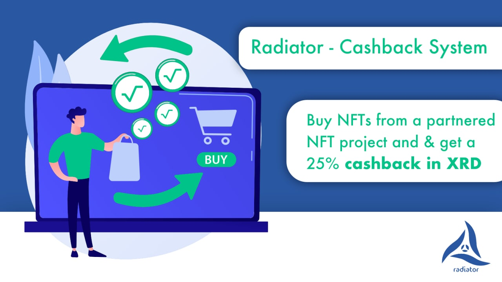

Cashback-System
The idea behind $RDT is a "discount-token". We want a network of partnerships throughout the whole Radix Ecosystem. The customer basically gets a cashback when they hold a certain amount of RDT in the wallet.
Example 1: an NFT project is giving a 25% discount as cashback only because the customer holds a certain amount of RDT in his wallet.
Example 2: A customer saves the trading fee on a DEX by holding a certain amount of RDT in his wallet.
We actually connect unconnectable projects throughout radix.
Why should a project partner with us? Its simple: Because they don't lose anything. If the customer doesn‘t have any RDT in the wallet, it is the normal price anyway. If the customer holds a certain amount (set by the partner project) of RDT it means, that he buys there on purpose as he wants to get the discount. It‘s actually kind of proof that we did set the incentive to buy there. The partner project can simply set the bar of how many RDT on the wallet it is supposed to be – to counteract
any inflation of the token. We want to build a win-win-win situation for the partnerproject, the customer and us of course.
Our aim is to help increasing the revenue of any project.
Our job is to promote our partners and set the incentives.
